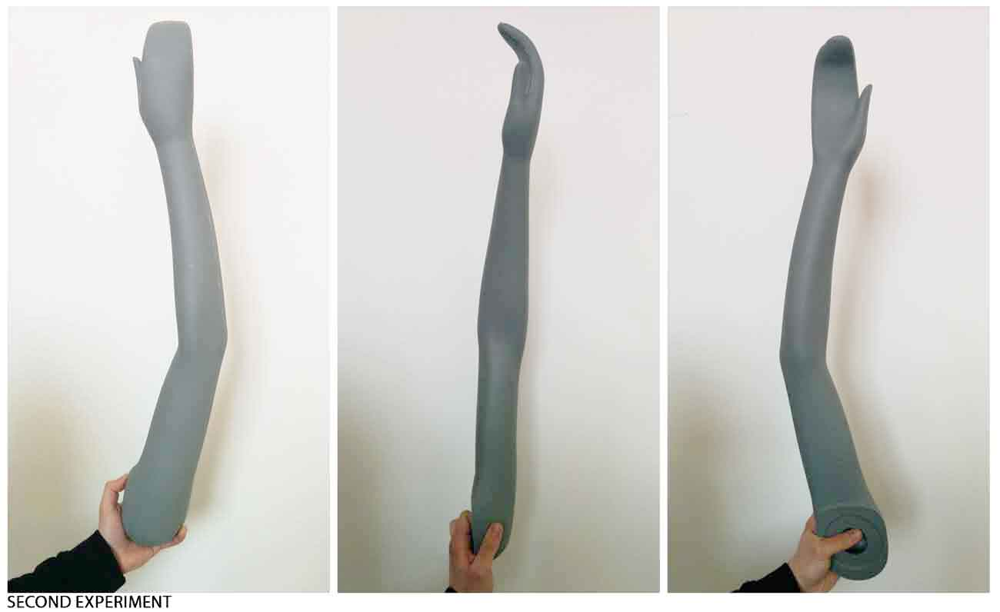

Week 5
3D Scanning and Printing
3D SCANNING and PRINTING
ASSIGNMENT:
- design and 3D print an object (small, few cm) that could not be made subtractively;
- 3D scan an object (and optionally print it).
Tools:
3D Systems Sense Scanner3D Print Wasp Delta
Scanning
The exercises of the 5th week are the 3D scanning of a subject, and the 3D printing of an object modeled by us.
I tried to scan body parts of one of my mates, but I realized that it was really hard, because the scanner was always loosing the subject image.

So I proceeded by scanning an inanimate object. I chose the arm of a mannequin because the aim of my 3D printing exercise was to create women's accessories.
To scan I used the 3D Systems Sense Scanner.
After scanning, I realized that there were flaws in the scanned model. So, I fixed them with "touch up" tool of Sense software.
- I saved the file (sense-mano.ply), and I opened it with Rhinoceros.
3D PRINTING
MACHINE FEATURES:
Cylindrical Print Area: 400mm diametr x 700mm height;
Accurancy: 50 micron;
Nozzle Diameter: 0.35 mm – 0,70 mm – 0,90 mm
Filaments used: 3mm (PLA, ABS, nylon, filaflex, Polistirene, Laywood)
Max Speed: 300 mm/s
Software used: Rhinoceros, Grasshopper, Cura, Photoshop.
The objets chosen were a necklace and a bracelet.
It was the first time I used Grasshopper, and it was a great experience. Having the opportunity to control a 3D model, by using variable parameters with simple functions, gives me a feeling of total control of on my work.
After that, I exported the 3D model in .stl format by Grasshopper and I imported it into Cura in order to create the G-code for the machine. Cura is a software provided by Ultimaker, and it is able to get ready G-code for 3d printing.
Settings:
Print Speed: 120 (mm/s)
Printing Temperature: 185 (C)
Bed Temperature: 60 (C)
Fill Density: 20 (%)
Filament Diameter: 1.75 (mm)
Filament: yellow PLA
We have made a lot of tests because every time the printed object lifted up from the floor.
Download:
SCANNING
Sense-arm.plySense-arm.3dm
3D PRINTING
bracelet.3dmbracelet.gcode
bracelet.gh
bracelet.stl
necklacebracelet.stl
necklace.stl